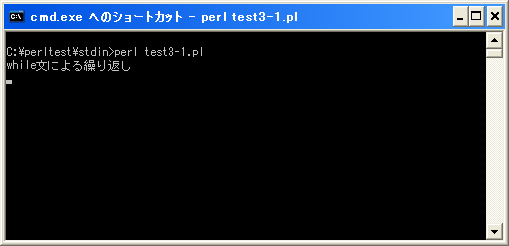
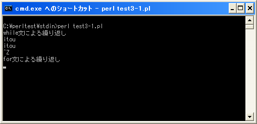
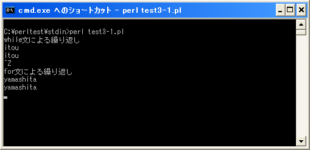
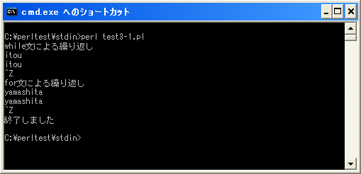

- Home ›
- Perl入門 ›
- 標準入力とコマンドライン引数
while/for文を使い標準入力から繰り返し値を取得
標準入力からある条件を満たすまで繰り返し入力を行うという処理はよく使われます。例えば次のように記述します。
while (defined(my $line = <STDIN>)){
chomp($line);
print "$line¥n";
}
上記の場合、while文の条件式の箇所で標準入力から1行読み込みます。条件式が真の場合、読み込んだ行から改行を取り除き画面に出力しています。
行入力演算子である「<>」はファイルの終端を読み込むと未定義値(undef)を返します。そこで「defined」関数を使い未定義値(undef)が返されたときに繰り返しを終了させています。未定義値(undef)自体が偽となるため、「defined」関数を使用しなくてもファイルの終端に達すると繰り返しは終了しますが、未定義値以外で改行無しの「0」などを読み込んだ場合でも条件式は偽となるため未定義値(undef)かどうかを判別する方が安心です。
今回のように標準入力から値を読み込む場合はファイルの終端と言うものはありませんので、ファイルに終端に相当する「Ctrl＋z」を入力して「Enter」キーを押すか、または繰り返し処理の本文の中で何からの条件判断を行って繰り返し処理を抜けるようにします。
なお「define」関数を記述した方がいいと先ほど書きましたが、現在では「defined」関数を記述しなくても次のように記述するだけで「define」関数が記述された時と同じ処理を行ってくれるようです。
while (my $line = <STDIN>){
chomp($line);
print "$line¥n";
}
またwhile文(とfor文)の条件式の中に記述する場合にはデフォルト変数の「$_」を使って次のように記述することも可能です。
while (<STDIN>){
chomp($_);
print "$_¥n";
}
ただし上記のデフォルト変数「$_」はブロック内だけのローカル変数ではありません。よってwhile文やfor文の外側で変数「$_」を使っていた場合は値が書き換えられますので注意して下さい。
なおfor文の場合は次のように記述します。
for (;<STDIN>;){
chomp($_);
print "$_¥n";
}
どちらの場合も使い方は同じです。
サンプルプログラム
では簡単なプログラムで確認して見ます。
use strict;
use warnings;
use utf8;
binmode STDIN, ':encoding(cp932)';
binmode STDOUT, ':encoding(cp932)';
binmode STDERR, ':encoding(cp932)';
print "while文による繰り返し¥n";
while (my $line = <STDIN>){
chomp($line);
print "$line¥n";
}
print "for文による繰り返し¥n";
for (;<STDIN>;){
chomp($_);
print "$_¥n";
}
print "終了しました¥n";
上記を「test3-1.pl」の名前で保存します(文字コードはUTF-8です)。そしてコマンドプロンプトを起動し、プログラムを保存したディレクトリに移動してから次のように実行して下さい。

プログラムを実行すると入力待ちとなります。何か入力してから「Enter」キーを押すと入力された内容が画面に表示されます。

引き続き入力待ちとなりますので今度は「Ctrl＋z」キーを押して(画面では「^Z」と表示されます)から「Enter」キーを押します。

するとwhile文は抜けて次の処理に移ります。次はfor文で同じ処理を行っていますので、何か入力して「Enter」キーを押せば入力された内容を表示します。

引き続き入力待ちとなりますので「Ctrl＋z」キーを押してから「Enter」キーを押すとプログラムが終了します。

( Written by Tatsuo Ikura )

著者 / TATSUO IKURA
初心者～中級者の方を対象としたプログラミング方法や開発環境の構築の解説を行うサイトの運営を行っています。